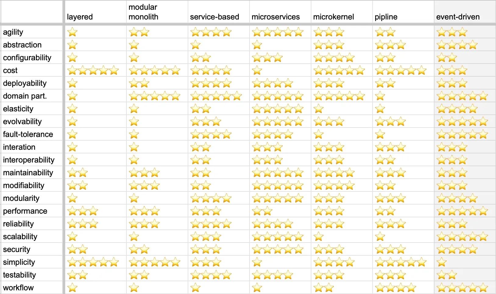
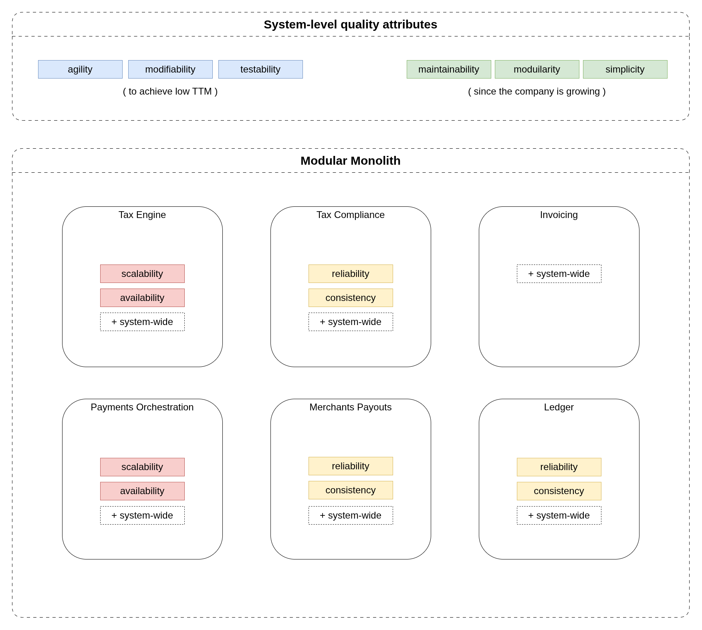

MoR System Design
Quality Attributes & Architectural Style
Quality Attributes are architectural characteristics that a system (or an individual Bounded Context) may have.
If a particular Bounded Context requires quality attributes different from other contexts (for example, an asymmetrically higher load, which means higher scalability/elasticity requirements), this may be a signal to extract it into a separate service (deployable).
Below is a list of quality attributes that I've chosen for the system, and their definitions from Arc42:
https://quality.arc42.org/qualities/
Definitions of the selected quality attributes#
| Quality Attribute | Definition |
|---|---|
| Agility | A system can rapidly be changed (as opposed to flexibility, which means that a system can easily be changed.) |
| Availability | Capability of a product to be accessible and operational when required for use. Essentially, information and systems should be up and running when needed. |
| Testability | Capability of a product to enable an objective and feasible test to be designed and performed to determine whether a requirement is met. |
| Modularity | Capability of a product to limit changes to one component from affecting other components. Modularity implies that the product will be composed of discrete modules or components with cohesive content and minimal coupling to other modules or components. |
| Maintainability | Maintainability is concerned with modifications after the software baseline is established. The goal of a maintenance activity is to correct defects, adapt to changing environments, or improve a system's future maintainability or other quality attributes. |
| Modifiability | Capability of a system to be effectively and efficiently modified without introducing defects or degrading existing product quality |
| Reliability | Capability of a product to perform specified functions under specified conditions for a specified period of time without interruptions and failures. |
| Scalability | Capability of a product to handle growing or shrinking workloads or the ease with which the product's capacity can be adapted to handle variability |
| Simplicity | For software, "simple" means easy to read, understand, and correctly modify. |
Why these quality attributes:
- By improving agility, modifiability, testability of the system we can lower the TTM of our features
- Higher maintainability, modularity, simplicity help to prove business hypotheses faster, and discard them with less impact on the system.
Here is a comparison chart of architectural styles and their quality attributes:
Sorry for the typos in the image, the picture is not mine >.<

Modelled load profile#
For one Merchant "Lazy Stretch":
- 50k EU subscribers on monthly plans
- ~2k payments a day (1.7k renewals, 150 new, retries).
- ~2.5k tax calcs a day, +15k HTTP requests, 12k events.
- 0.2 requests per second on average, ~10 per second at peak (nightly renewal batch, January sign-ups).
System Architectural Style#
Mapping of the quality attributes to our Bounded Contexts:

For the overall system I've chosen Modular monolith:
- It has good values for maintainability and modifiability, with great simplicity and lowest cost.
- The modelled load profile allows us to start with a modulith, and if the context boundaries are drawn correctly, it will be possible to migrate to microservices later when the load increases.
- Most likely, the team working on the system will be small (at least at first), and microservice architecture will not pay off from the start.
If the modelled load profile is close to reality, then:
- Below about 200 merchants (under 500k calcs a day, about 30 per second at peak) there is no load reason to split.
- Between 1,000 and 2,000 merchants, watch the Tax Calculation p99 latency and decide on the split.